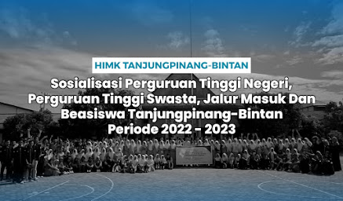

Berjalan Dengan Antusias, HIMK Mengadakan Sosialisasi Ke Sebelas
Pengenalan Kegiatan
Kundur - Himpunan Mahasiswa Kundur (HIMK) Tanjungpinang-Bintan telah melaksanakan kegiatan Sosialisasi perguruan tinggi negeri, perguruan tinggi swasta, jalur masuk, dan beasiswa yang ada di Tanjungpinang dan Bintan. Pada tahun 2023, kegiatan sosialisasi ini merupakan kegiatan sosialisasi ke-11 dengan tema "Menanam Niat, Menuai Hajat."
Kegiatan tersebut dikunjungi sebanyak 13 sekolah SMA, SMK, dan MA yang ada di Pulau Kundur. Sosialisasi tersebut berlangsung selama enam hari dari tanggal 30 Januari hingga 4 Februari 2023.
Pengalaman dari Ketua Pelaksana
"Pada kegiatan sosialisasi tahunan Himpunan Mahasiswa Kundur Tanjungpinang-Bintan kali ini saya sendiri dan teman-teman anggota HIMK banyak mendapatkan pengalaman dan pelajaran dari setiap sekolah-sekolah yang kami kunjungi," tutur Dorry Ridhowinaldy, ketua pelaksana.
Dorry berharap dengan adanya kegiatan sosialisasi tersebut, dapat membangkitkan minat belajar untuk melanjutkan pendidikan ke perguruan tinggi dan mencapai cita-cita mereka melalui informasi yang diberikan.
"Saya harap kegiatan ini menjadi wadah bagi teman-teman untuk membangkitkan minat belajar, khususnya siswa dan siswi kelas 12 di Pulau Kundur, untuk melanjutkan pendidikan ke perguruan tinggi dan mencapai cita-cita mereka," ujar Dorry Ridhowinaldy.
Bentuk Pengabdian
Kegiatan sosialisasi ini juga dijadikan sebagai bentuk proses pengabdian terhadap kedaerahan oleh Himpunan Mahasiswa Kundur (HIMK) Tanjungpinang-Bintan.
"Kegiatan sosialisasi tahunan ini juga merupakan bentuk pengabdian terhadap kedaerahan Kundur oleh HIMK Tanjungpinang-Bintan," ucap Dorry Ridhowinaldy.
Antusiasme Siswa
Ketua Umum HIMK Tanjungpinang-Bintan, M Teo Renaldi, mengatakan bahwa antusiasme siswa dan siswi kelas 12 di setiap sekolah yang dikunjungi sangat luar biasa.
"Antusias siswa dan siswi kelas 12 di setiap sekolah yang kami sosialisasikan sangat luar biasa. Mereka banyak merespon dan aktif bertanya, terutama mengenai beasiswa," ucap M Teo Renaldi.
Menurutnya, niat siswa dan siswi untuk melanjutkan pendidikan sudah ada, tinggal bagaimana memperkuat niat tersebut dengan cara memperjuangkan beasiswa.
"Niat siswa dan siswi itu sudah ada, kita tinggal bantu mengokohkan niat mereka dengan memperjuangkan beasiswa, baik dari dalam kampus maupun luar kampus seperti dari pemerintah daerah," ujar M Teo Renaldi.
Penutup Kegiatan
Kegiatan ini juga diakhiri dengan memberikan beberapa buku kepada siswa dan siswi sebagai bentuk terima kasih dari rekan-rekan HIMK serta untuk menanamkan semangat belajar.
Penulis: Muhammad Wibhi Kurnia